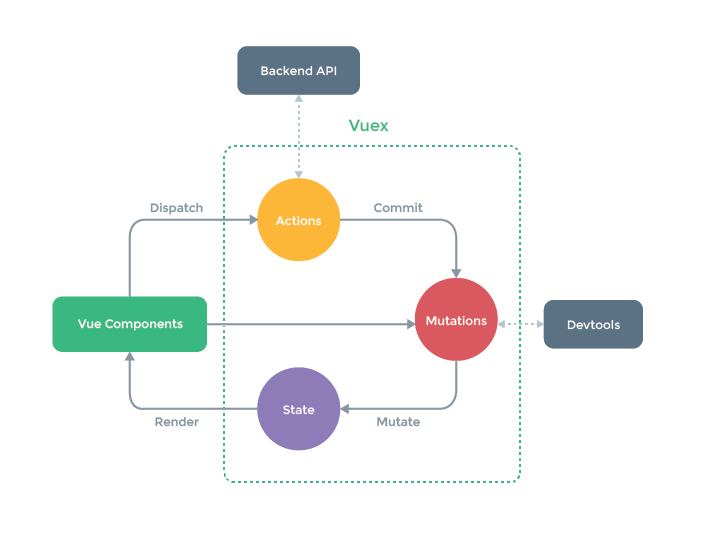

当前组件接收到的 props 对象。Vue 实例代理了对其 props 对象属性的访问。在父组件中使用子组件，本质通过v-bind绑定属性传入子组件，子组件通过props接收父组件传入的属性。
<template>
<div>
父组件:{{mny}}
<Son1 :mny="mny"></Son1>
</div>
</template>
<script>
import Son1 from "./Son1";
export default {
components: {
Son1
},
data() {
return { mny: 100 };
}
};
</script>触发当前实例上的事件。附加参数都会传给监听器回调。子组件触发父组件方法,通过回调的方式将修改的内容传递给父组件，父组件通过v-on接收子组件传入的方法，并接收子组件传入的参数。
<template>
<div>
父组件:{{mny}}
<Son1 :mny="mny" @input="change"></Son1>
</div>
</template>
<script>
import Son1 from "./Son1";
export default {
methods: {
change(mny) {
this.mny = mny;
}
},
components: {
Son1
},
data() {
return { mny: 100 };
}
};
</script>子组件触发绑定自己身上的方法
<template>
<div>
子组件1: {{mny}}
<button @click="$emit('input',200)">更改</button>
</div>
</template>
<script>
export default {
props: {
mny: {
type: Number
}
}
};
</script>同步父子组件的数据,->子组件上使用的语法糖的写法 （.sync和v-model写法），v-model和.sync的区别在于v-model触发的事件只能是input，而.sync可以自定义事件名
对一个 prop 进行“双向绑定”, 推荐以 update:myPropName 的模式触发事件取而代之,然后父组件可以监听那个事件并根据需要更新一个本地的数据属性。
<Son1 :mny.sync="mny"></Son1>
<!-- 触发的事件名 update:(绑定.sync属性的名字) -->
<button @click="$emit('update:mny',200)">更改</button>一个组件上的 v-model 默认会利用名为 value 的 prop 和名为 input 的事件.
<Son1 v-model="mny"></Son1>
<template>
<div>
子组件1: {{value}} // 触发的事件只能是input
<button @click="$emit('input',200)">更改</button>
</div>
</template>
<script>
export default {
props: {
value: { // 接收到的属性名只能叫value
type: Number
}
}
};
</script> $parent: 指定已创建的实例之父实例，在两者之间建立父子关系。子实例可以用 this.$parent 访问父实例，子实例被推入父实例的 $children 数组中。
$children: 当前实例的直接子组件。需要注意 $children 并不保证顺序，也不是响应式的。如果你发现自己正在尝试使用 $children 来进行数据绑定，考虑使用一个数组配合 v-for 来生成子组件，并且使用 Array 作为真正的来源。
<Grandson1 :value="value"></Grandson1>
<template>
<div>
孙子:{{value}}
<!-- 调用父组件的input事件 -->
<button @click="$parent.$emit('input',200)">更改</button>
</div>
</template>
<script>
export default {
props: {
value: {
type: Number
}
}
};
</script> 包含了父作用域中不作为 prop 被识别 (且获取) 的特性绑定 (class 和 style 除外)。
<Son2 name="小明" age="10"></Son2>
<!-- 可以在son2组件中使用$attrs属性,可以将属性继续向下传递 -->
<div>
儿子2: {{$attrs.name}}
<Grandson2 v-bind="$attrs"></Grandson2>
</div>
<template>
<div>孙子:{{$attrs}}</div>
</template> 包含了父作用域中的 (不含 .native 修饰器的) v-on 事件监听器。
<Son2 name="小珠峰" age="10" @click="()=>{this.mny = 500}"></Son2>
<!-- 可以在son2组件中使用listeners属性,可以将方法继续向下传递 -->
<Grandson2 v-bind="$attrs" v-on="$listeners"></Grandson2>
<button @click="$listeners.click()">更改</button>依赖注入原理，provide 和 inject 主要为高阶插件/组件库提供用例。并不推荐直接用于应用程序代码中。
provide 选项应该是一个对象或返回一个对象的函数。该对象包含可注入其子孙的属性。
provide() {
return { parentMsg: "父亲" };
},inject: ["parentMsg"] // 会将数据挂载在当前实例上一个对象，持有注册过 ref 特性的所有 DOM 元素和组件实例。可以在父组件中获取子组件的属性和方法。
<Grandson2 v-bind="$attrs" v-on="$listeners" ref="grand2"></Grandson2>
mounted() { // 获取组件定义的属性
console.log(this.$refs.grand2.name);
}用于跨组件通知(不复杂的项目可以使用这种方式)
Vue.prototype.$bus = new Vue();在vue原型对象上添加一个公共发放，暴露vue示例，供组件接收方法
mounted() {
this.$bus.$emit("my", "我是Grandson1");
},兄弟间组件接收方法
mounted() {
this.$bus.$on("my", data => {
console.log(data);
});
},全局统一状态管理，用于大型项目组件间通信，管理数据状态。

vue所有通信方式总结，嗯，就酱啦~